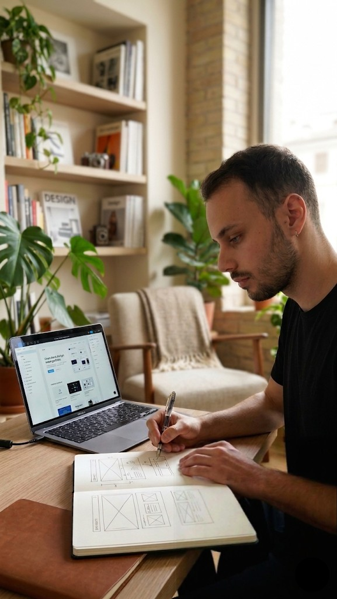
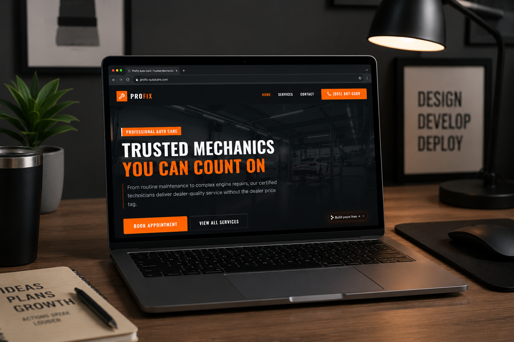

PORTEFÓLIO DIGITAL
Desenho ideias e construo-as na web.
Sou um design engineer com foco no detalhe, na tipografia e na sensação de que cada elemento foi colocado no ecrã com intenção. Acredito que a tecnologia deve ser calma, útil e bela.
Descobre a minha jornada

Não faço sites
Faço ferramentas.
Comecei o meu percurso no design gráfico, a desenhar cartazes e livros. A web surgiu como uma tela infinita, mas rapidamente percebi que ferramentas como o Photoshop não eram suficientes: precisava de meter as mãos no código para controlar o resultado final.
Hoje, atuo na interseção entre o design e a engenharia. Não acredito em "entregar os ecrãs aos developers". Acredito em construir protótipos vivos, em iterar no browser, em sentir a interface a reagir ao toque antes de a dar por terminada.
"O meu trabalho é para clientes que valorizam o artesanato digital. Aqueles que percebem que uma animação fluida ou uma margem bem calculada não são luxos — são a diferença entre uma experiência que se tolera e uma que se recorda."
Como trabalho
Um processo iterativo, focado no conteúdo e na interatividade desde o primeiro dia.
-
1. Descoberta & Identidade
Antes de desenhar qualquer ecrã, precisamos de entender a alma do projeto. Definimos a tipografia, a paleta de cores e o tom de voz que vão guiar todas as decisões visuais.
-
2. Prototipagem Viva
Salto rapidamente do Figma para o código. Prefiro desenhar no browser sempre que possível para testar interações, responsividade e o verdadeiro 'feel' do produto.
-
3. Refinamento & Performance
A magia está nos últimos 10%. Otimizo animações, ajusto tempos de carregamento, garanto acessibilidade total e afino cada detalhe até estar perfeito.
Projetos Selecionados
Trabalho recente (2026 — 2026)
-

E-COMMERCE2026
Mecânica Boss
Uma loja online minimalista para uma marca de moda sustentável. Foco total na tipografia, fluidez e num processo de checkout sem atritos.
JavaScript TailwindVER O SITE AO VIVO -
E-COMMERCE2026
Mecânica Boss
Uma loja online minimalista para uma marca de moda sustentável. Foco total na tipografia, fluidez e num processo de checkout sem atritos.
JavaScript TailwindVER O SITE AO VIVO -
E-COMMERCE2026
Mecânica Boss
Uma loja online minimalista para uma marca de moda sustentável. Foco total na tipografia, fluidez e num processo de checkout sem atritos.
JavaScript TailwindVER O SITE AO VIVO -
E-COMMERCE2026
Mecânica Boss
Uma loja online minimalista para uma marca de moda sustentável. Foco total na tipografia, fluidez e num processo de checkout sem atritos.
JavaScript TailwindVER O SITE AO VIVO
O meu percurso
Os lugares onde afiei as minhas ferramentas.
-
2021 - Presente
Senior Design Engineer
Estúdio Boreal
Lidero a ponte entre o design e a engenharia. Responsável pela criação de sistemas de design e implementação de interfaces complexas com foco em performance e acessibilidade.
-
2019 - 2021
Frontend Developer
Nova Agência
Desenvolvimento de plataformas web para clientes internacionais. Foco em arquitetura React e animações fluidas.
-
2017 - 2019
UI/UX Designer
Freelance
Desenho de interfaces para startups. Foi aqui que percebi que precisava de aprender a programar para dar vida às minhas ideias.
PRÓXIMO PASSO
Tens um projeto em mente? Vamos conversar.
Estou atualmente disponível para novos projetos como freelancer ou para integrar uma equipa com a visão certa. Preenche o formulário e respondo em menos de 24 horas.